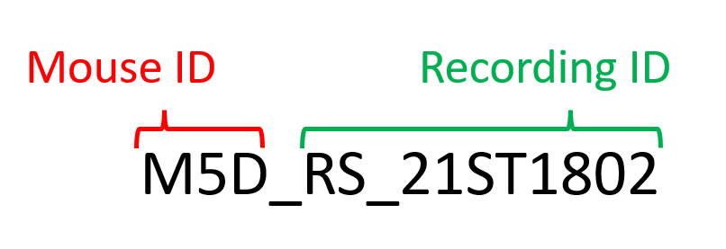

This is the first step in order to use all the resources from umIT. The project file is a .mat file that contains a Protocol object. This object contains a database with the list of subjects and aquisitions as well as the experiments' meta data.
The Protocol object uses a function (named protocol function) that scans the content of the raw directory containing the imaging recordings to create and update the database. The function protocolFcn_template.m is an example of protocol function that can be used as a starting point to create your own.
Note
The project file can only handle experiment files that inside one folder. For instance, if you have data across multiple hard drives, you will need to create one project file per location.
The data used in our tutorials consists of widefield imaging of calcium signals from the mouse cortex acquired with LabeoTech's modular optical imaging system. The project consists of longitudinal recordings of a cohort of mice expressing GCaMP6 in cortical excitatory neurons1 under distinct experimental protocols. Thus, the project file will contain a series of subjects (i.e. mice) with each mouse having a series of different acquisitions over time.
The raw data of each recording consists of a series of binary files located in a folder. The folder name contains the identifiers of the mouse and the acquisition as follows:

In our example, all recording folders are located under one main folder. In the section below, we will show you how to create a project file using the protocolFcn_template function that was designed to read the data organized as mentioned above.
Paragraph1